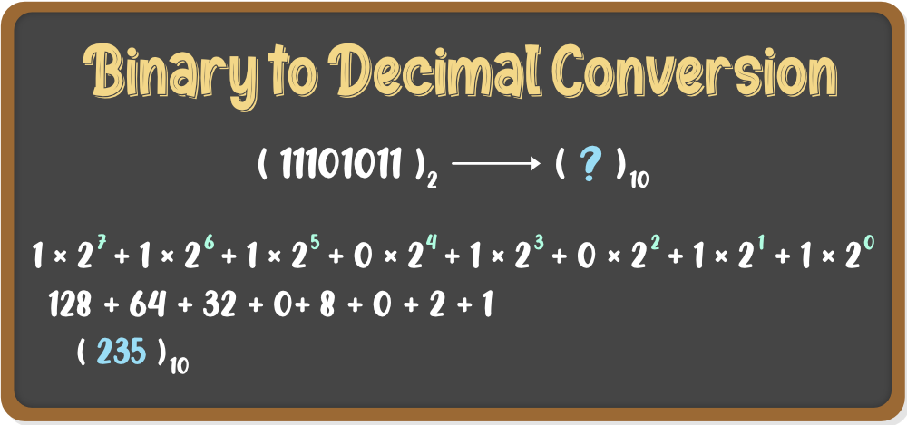
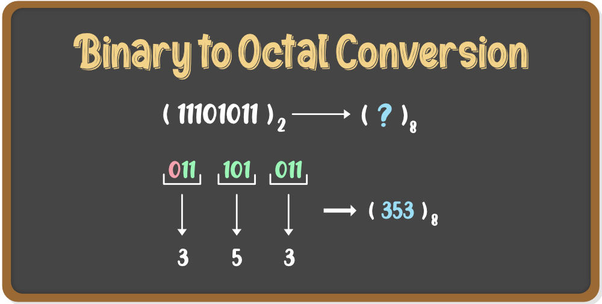
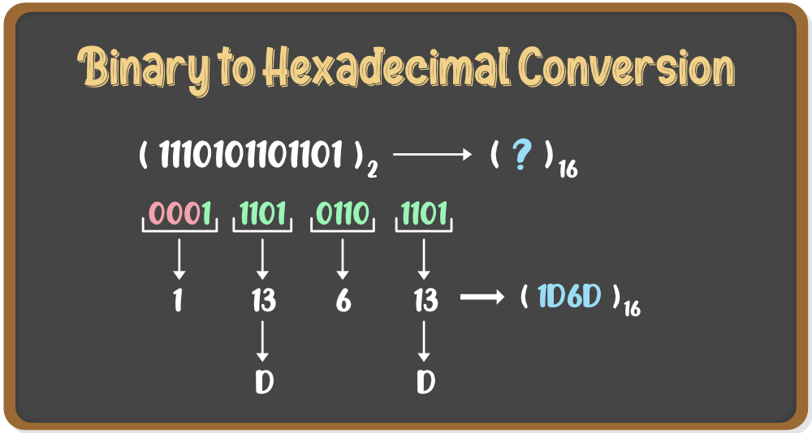

INTRODUCTION OF BINARY NUMBER SYSTEM
"A binary number is a number expressed in the base-2 numeral system or binary numeral system, a method of mathematical expression which uses only two symbols:" typically "0" (zero) and "1" (one).
BINARY TO OTHER CONVERSIONS
Binary to Decimal
In this conversion, binary number to a decimal number, we use multiplication method, in such a way that, if a number with base n has to be converted into a number with base 10, then each digit of the given number is multiplied from MSB to LSB with reducing the power of the base. Let us understand this conversion with the help of an example.

Binary to Octal
To convert a binary number to octal number, these steps are followed −
- From the least significant bit, make groups of three bits.
- If there are one or two bits less in making the groups, 0s can be added after the most significant bit
- Convert each group into its equivalent octal number

Binary to Hexadecimal
To convert a binary number to hexadecimal number, these steps are followed −
- Starting from the least significant bit, make groups of four bits.
- If there are one or two bits less in making the groups, 0s can be added after the most significant bit.
- Convert each group into its equivalent octal number.
